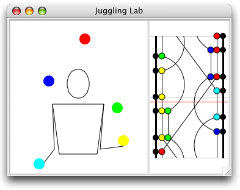

Juggling Lab
~ Current release: 0.6.1 (October 11, 2011) ~
Juggling Lab is an application for creating and animating juggling patterns. Its main goals are to help people learn juggling patterns, and to assist in inventing new ones.
This software is released under the GNU General Public License.
Juggling Lab is written entirely in Java, so it will run on any platform that supports the Java 2 Standard Edition platform. It has been tested extensively on Windows and Mac OS X, and we have reports of users running it successfully on other Unix-like operating systems (Linux, Solaris).
Windows: Double-click on the JugglingLab.bat file. If it doesn't launch correctly, you most likely have an older version of Java; try installing Sun's latest version.
Mac OS X: Juggling Lab works like any other application, and is launched with a double-click.
Other: The executable jar file is bin/JugglingLab.jar. Consult your Java installation's documentation for instructions on how to run a jar file. On Unix-like systems: (1) change your shell search path to include the "java" command (try 'which java' in the shell to verify it's working), and (2) execute the "JugglingLab.sh" shell script.
Read these to get up to speed on how to use Juggling Lab:
- Siteswap notation. The juggling pattern notation used by Juggling Lab.
- The pattern entry panel. How to enter siteswap patterns, add hand movements, and change pattern timing.
- The generator panel. What the siteswap generator does and what all those options mean.
- The visual editor. How to use Juggling Lab's visual editor to modify patterns.
- Web link front end. How to create a Juggling Lab animation with a simple web link.
This more specialized documentation covers topics the average user won't need to know:
- Juggling Markup Language (JML). Explains JML, Juggling Lab's internal pattern representation.
- Using Juggling Lab as an applet. Describes the HTML needed to create an animation within a web page.
Source code documentation is also available.
As distributed, Juggling Lab is already compiled so there is no need to do so again unless you want to change the source code. If you are interested in adding new features to Juggling Lab, please consider becoming a developer on the Juggling Lab project so that your features become a part of the standard distribution; contact the Juggling Lab project administrator.
Please note that most of Juggling Lab is released under the GNU General Public License (GPL). The GPL requires that, if you make Juggling Lab publicly available, it must be accompanied by a copy of the source code in a machine-readable format.
First you need to extract the source code, distributed as a compressed archive:
Windows: Double-click on the bin/extract_source.bat batch file. This should create a directory called source in the main Juggling Lab directory.
Mac OS X: From a Terminal window, execute the bin/extract_source.sh shell script. This will create a folder called source in the same folder as the main Juggling Lab application.
Other: The source code is archived in bin/JugglingLab_source.jar Consult your Java installation's documentation for instructions on how to expand a jar file. On Unix-like systems: (1) change your shell search path to include the "jar" command (try 'which jar' in the shell to verify it's working), and (2) execute the bin/extract_source.sh shell script.
Next you need to compile the source code. The distribution includes a file build.xml, which is a build file for use with the Apache Ant Java build system. Ant is free software that is available for most platforms at ant.apache.org.
Windows and Other: The "jars" target in build.xml compiles and builds two files: bin/JugglingLab.jar and bin/JugglingLab_source.jar. The latter source archive should be included with Juggling Lab whenever it is made publicly available, in the same directory as the executable jar file.
Mac OS X: The "osx" target in build.xml makes the double-clickable Mac OS X application. (From the Terminal, type "ant osx" in the same directory as build.xml. Note that Ant comes pre-installed with Mac OS X.) This build only works on a Mac since it depends on the presence of the JavaVM framework.
Stay informed of future updates to Juggling Lab by subscribing to the Juggling Lab announcement mailing list (expect low traffic).
You can also contribute directly to the project by:
- Finding bugs and reporting them on the Juggling Lab bug tracking page.
- Thinking of interesting ideas for the Juggling Lab feature requests page.
- Creating new patterns for Juggling Lab, and emailing them to one of the project admins.
- Developing code. Contact one of the project admins, and in the meantime look at the online source code documentation or browse the source repository.
- Brian Campbell – Juggling Lab bookmarklet
- Vincent Bruel – Suggestions for improved bouncing support (hyperlift/hyperforce patterns), ball-bounce audio sample
- Jason Haslam – Ring prop, bitmapped-image prop, improved ball graphic, visual editor enhancements, internationalization of user interface including Spanish and Portuguese translations, and many bug fixes
- Steve Healy (JAG) – Many invaluable design suggestions and bug reports, especially of siteswap notation component
- Anselm Heaton – Orbit-finding code, other design suggestions
- Lewis Jardine – Apache Ant build file, GPL clarifications
- Ken Matsuoka – JuggleMaster pattern library, used here with his permission
- David Megginson – Simple API for XML (SAX) interface
- Microstar Software Ltd. – AElfred XML parser
- Rupert Millard – Implementation of '*' shortcut for synch notation
- Herve Nicol – Bug fixes
- Denis Paumier – Suggestions for passing and multiplexing improvements to siteswap generator
- Andrew Peterson – Performance profiling of animation routines
- Xavier Verne – French translation of user interface
- Johannes Waldmann – Doxygen-generated source code documentation
- Dozens of people from rec.juggling – Browser compatibility testing
- Jack Boyce – All other Juggling Lab code, project administration
People can juggle, too. Some good sources of general information are:
- Internet Juggling Database
- Juggling Information Service
- rec.juggling Usenet newsgroup